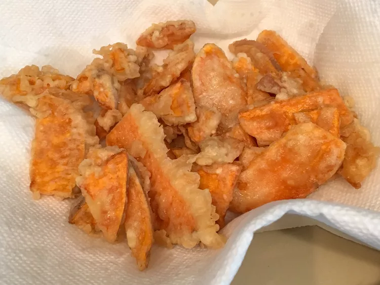

Sweet Potato Tempura

Description
This delicious sweet potato tempura recipe uses just one sweet potato plus
several common pantry ingredients. This easy recipe works to make other
vegetable tempura too, such as broccoli, mushroom, and onion.
Tempura is best enjoyed fresh and crispy, so it's important to serve it
immediately after frying. The batter' s light texture perfectly
complements the natural sweetness of the vegetables, especially when
paired with a tangy dipping sauce. For an added twist, you can experiment
with other root vegetables like carrots or parsnips, or even seafood like
shrimp. This simple yet flavorful recipe is great for a quick snack, a
side dish, or even as part of a larger meal spread.
Ingredients
Tempura
- 2 large eggs
- ¾ cup ice water
- 3 tablespoons ice water
- ¾ cup all-purpose flour
- 1 tablespoon all-purpose flour
- ½ teaspoon salt
- 2 cups oil for frying
- 1 large sweet potato, scrubbed and sliced into 1/8-inch slices
Dipping Sauce
- ¼ cup rice wine
- ¼ cup soy sauce
Steps
-
Make the tempura: Beat eggs in a large bowl until frothy. Stir in ¾ cup
plus 3 tablespoons ice water, ¾ cup plus 1 tablespoon flour, and salt
until just incorporated; batter should still be very lumpy.
-
Heat oil in a deep-fryer or large saucepan to 350 degrees F (175 degrees
C). Set a wire rack over several layers of paper towels.
-
Dry sweet potato slices with paper towels. Dip three slices into batter,
letting excess batter drip back into the bowl. Fry in the preheated oil
until golden brown, about 2 minutes per side. Use a slotted spoon to
transfer sweet potatoes to the wire rack. Repeat to dip and fry
remaining sweet potatoes.
-
Make the dipping sauce: Whisk rice wine and soy sauce together in a
small bowl. Serve with tempura.